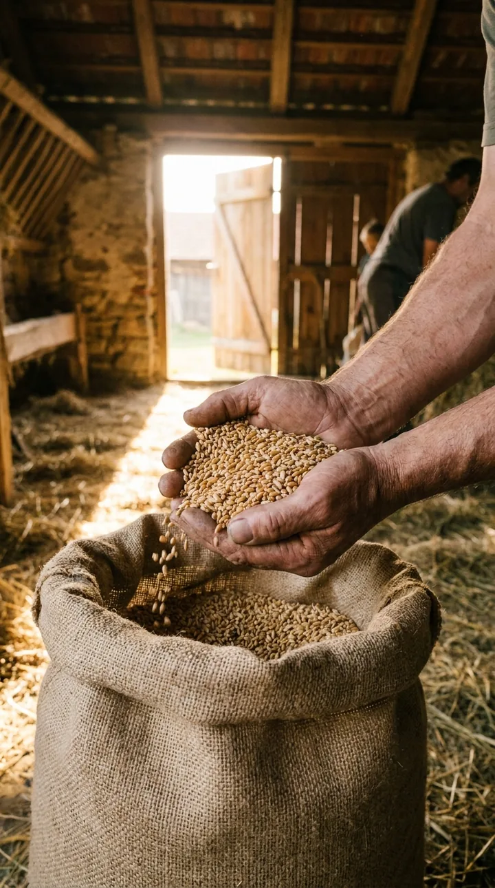
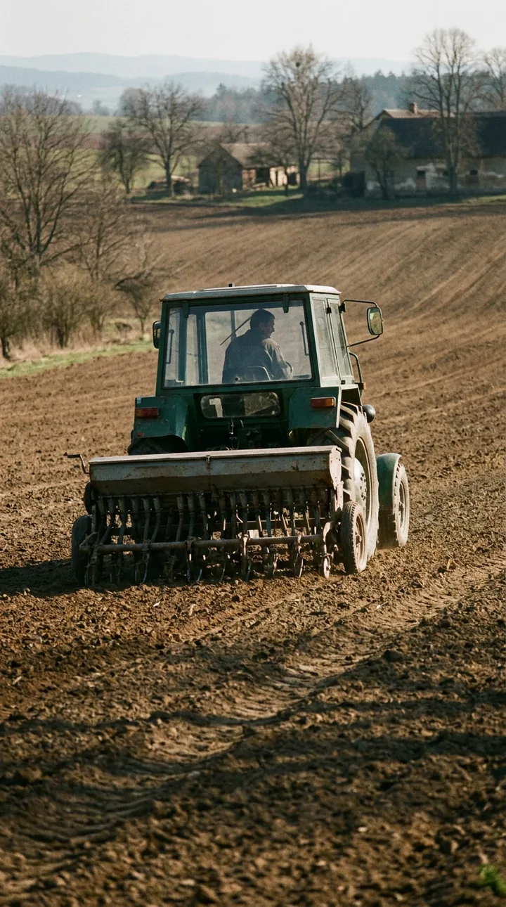
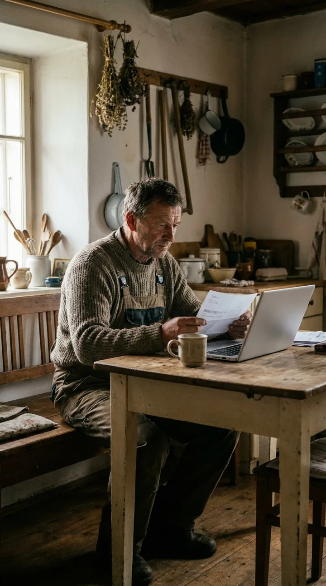
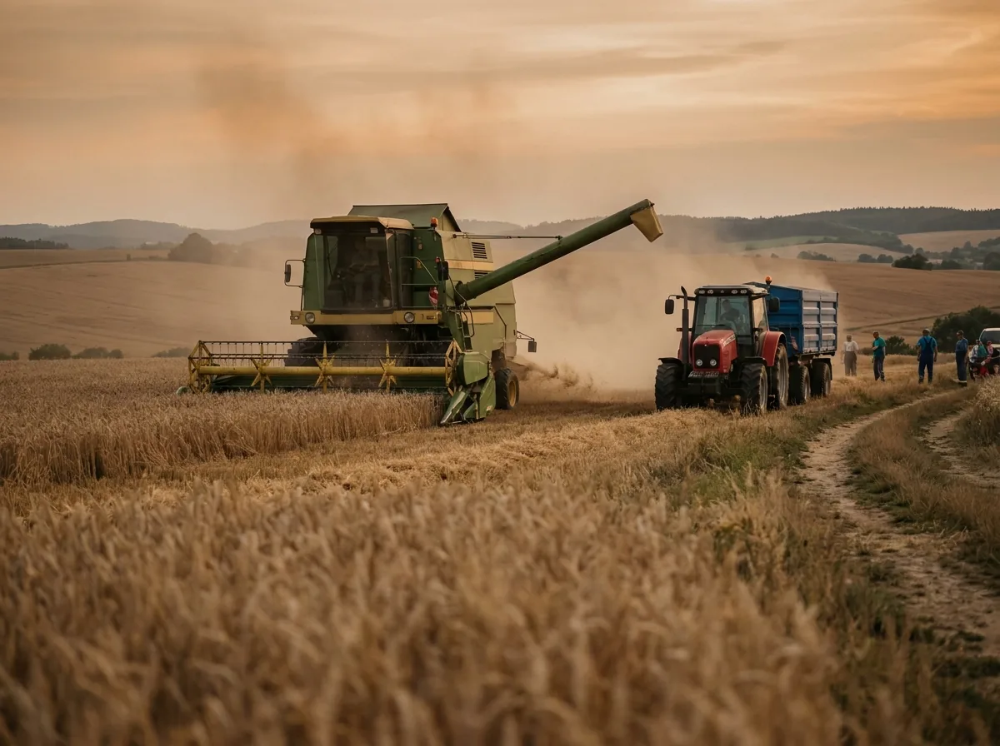
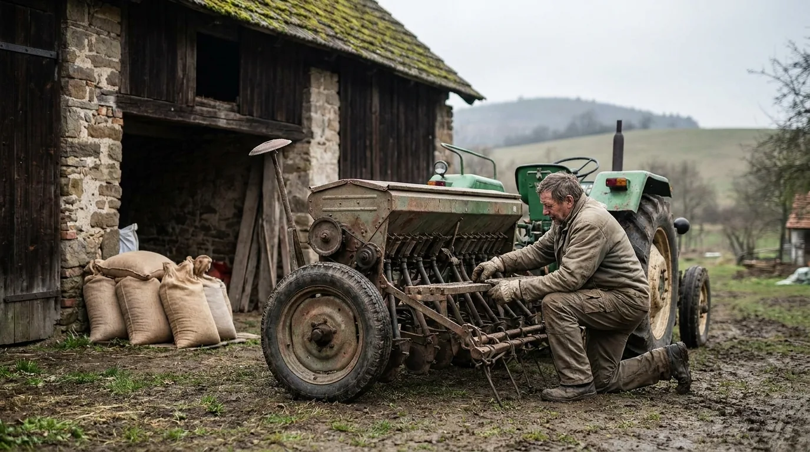

Peníze ze stroje.Sezóna jede dál.
Traktor, kombajn nebo manipulátor od vás dočasně vykoupíme a výkupní cenu pošleme na účet. Stroj dál pracuje na vašich polích — a po sklizni ho odkoupíte zpět za cenu, kterou znáte předem.
Nezávazná žádost zdarma · pro farmy a agro-podniky s IČO · technik přijede na statek · Raději zavolat? 800 123 456
Pozor! Tato služba není zdarma — za rezervaci možnosti zpětného odkupu platíte měsíční poplatek.
Orientačně: výkup 65 % a poplatek 3 % z odhadní hodnoty stroje · vše v Kč před podpisem
Výdaje na jaře, tržby po sklizni. Mezitím stojí kapitál ve strojích.
Osivo, hnojiva, nafta a náhradní díly se platí, když pole teprve začínají. Peníze z úrody a dotací přijdou o půl roku později. AgroCash tuto mezeru překlene — stroj od vás dočasně vykoupíme, ale neopustí vaše pole a sezónu vám odpracuje.
Osivo, hnojiva, přípravky, zálohy na naftu, zimní servis techniky. Tržby minimální.
Mzdy, nafta, opravy. Nejvyšší výdaje roku — a nejdelší čekání na tržby.
Náhradní díly na poslední chvíli, sušení, doprava. První tržby z prodeje úrody.
Prodej úrody, výplaty dotačních plateb. Ideální okamžik pro zpětný odkup stroje.
Zvýrazněná období: kdy zemědělci AgroCash využívají nejčastěji. Dobu rezervace odkupu si nastavíte podle své sklizně (1–12 měsíců).
Peníze přijdou na jaře, ne až po žních

Dodavatel chce zaplatit teď
Peníze z dočasného výkupu traktoru pokryjí nákup před setím — bez prodeje stroje, který vám sezónu odpracuje.

Traktor dál jezdí po vašich polích
Technik přijede na statek, prohlídka trvá hodinu a stroj se ani nezastaví. Provozovatelem zůstáváte vy.

Nabídka za 2 minuty, odkup po sklizni
Tři čísla v Kč hned online. Dobu rezervace nastavíte podle sklizně nebo výplaty dotací — odkup dřív je bez penalizace.
Provozní kapitál pro hospodaření
Osivo a hnojiva
Nákup před setím, kdy dodavatelé chtějí platbu předem nebo skonto za rychlou úhradu.
typicky 200 000 – 800 000 KčNafta na sezónu
Zálohy na palivo pro setí, sklizeň a dopravu — nejvyšší provozní položka roku.
typicky 150 000 – 500 000 KčNáhradní díly a servis
Oprava kombajnu týden před sklizní nesnese odklad. Díly a servis se platí hned.
typicky 100 000 – 400 000 KčMzdy sezónních pracovníků
Brigádníci a strojníci na sklizeň chtějí výplatu na konci měsíce, ne po prodeji úrody.
typicky 100 000 – 300 000 KčPřeklenutí do výplaty dotací
Dotační platby chodí s odstupem. Provoz mezitím běží — a účty se platí teď.
podle výše očekávané platbyKrmivo a veterinární péče
Živočišná výroba nečeká — krmné směsi, léčiva a služby veterináře jdou průběžně.
typicky 80 000 – 250 000 KčOrientační rozpětí z praxe (demo). Peníze z výkupu použijete pro své podnikání podle vlastního uvážení — účel na výkupní cenu nemá vliv.
Od traktoru po sklízecí mlátičku
Stroje s dohledatelnou historií, servisní knihou a doklady o vlastnictví. Stáří obvykle do 15 let, stav posoudí technik přímo u vás.
Tři kroky. Stroj neopustí vaše pole.
Zjistíte svá tři čísla
Zadáte IČO, typ stroje, rok výroby a motohodiny. Hned vidíte výkupní cenu, měsíční rezervační poplatek i cenu zpětného odkupu — v Kč.
Technik přijede na statek
Zkontroluje motohodiny, servisní knihu, hydrauliku, pneumatiky či pásy a doklady. Stroj zůstává tam, kde pracuje.
Podpis a peníze na účet
Kupní smlouva, předávací protokol a smlouva o užívání. U registrovaných strojů zařídíme převod pojištění. Odkup zpět kdykoliv do konce rezervace.

Co technik kontroluje
- Motohodiny a servisní historieservisní kniha, poslední velký servis, výměny olejů
- Technický stavmotor, převodovka, hydraulika, pneumatiky nebo pásy, elektronika
- Doklady o vlastnictvítechnický průkaz u registrovaných strojů, jinak kupní smlouva či faktura o pořízení
- Zatížení strojestávající leasing či úvěr na stroj, dotační vázanost — posuzujeme individuálně
Pozor! Tato služba není zdarma — za rezervaci možnosti zpětného odkupu platíte měsíční poplatek.
Co se ptají zemědělci, než se ozvou
Časté dotazy zemědělců
Čtení na dlouhé zimní večery

Peníze ze zemědělské techniky před sezónou: jak AgroCash funguje pro farmy
Osivo, hnojiva, nafta a náhradní díly se platí na jaře, tržby přijdou po sklizni. Jak dočasný výkup traktoru překlene sezónní mezeru.

Dočasný výkup vozu se zpětným odkupem: jak to funguje krok za krokem
Sedm kroků od formuláře k penězům na firemním účtu — a co přesně podepisujete. Průvodce pro OSVČ a firmy.
Kolik stojí dočasný výkup? Rezervační poplatek srozumitelně (příklad v Kč)
Tři čísla, která rozhodují: výkupní cena, měsíční rezervační poplatek a cena zpětného odkupu. Na příkladu vozu za 300 000 Kč.
Další řady CashAuto: CashAuto pro firemní vozy · TechCash pro autodopravce · jak o službě mluvíme
Zjistěte, kolik za váš stroj nabídneme.
Nezávazně, za 2 minuty, s technikem u vás na statku. Pro zemědělské podnikatele a firmy s IČO — spotřebitelům službu neposkytujeme.